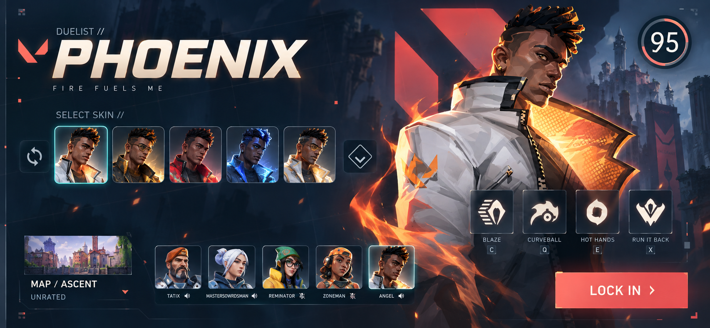
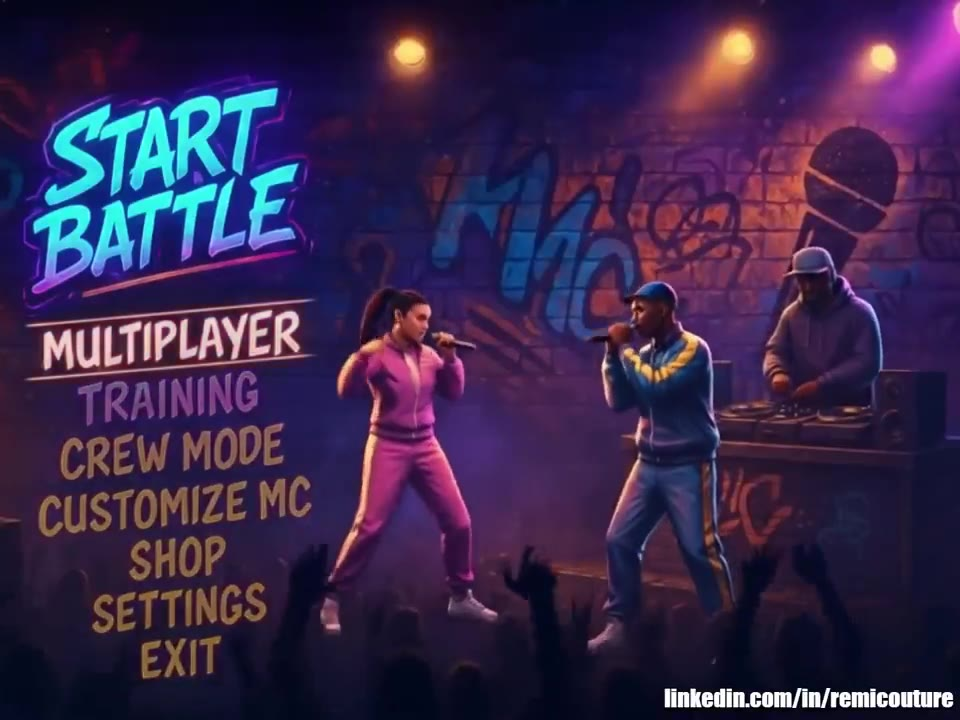
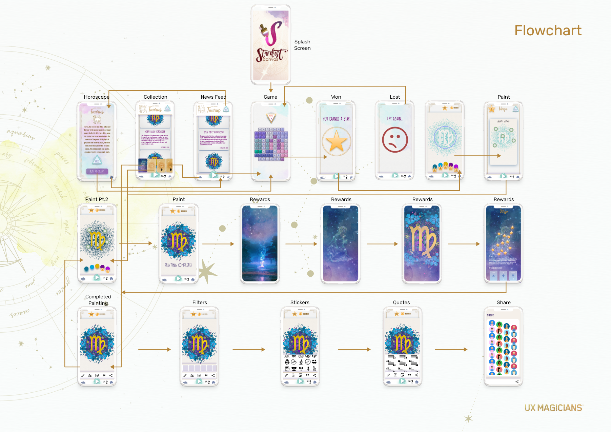

THE PORTFOLIO · UX/UI DESIGNER · GAMES + PRODUCTS
Sorted by what
you’re hiring for.
I’m a UX/UI designer. I work out how it should work, design how it looks, and when the team needs it, animate it and build it in engine. Go straight to the part you need.
Also here: UX portfolio PDF (short) ↗UX portfolio PDF (full) ↗my own games, where all three come together ↓browse everything ↓
01 · UX
UX design
How it works.
Before anyone draws a final screen, I work out what the player or user needs, the path they take, and what happens when something goes wrong.
- User research & problem framing
- User flows & journey maps
- Information architecture & sitemaps
- Wireframes & prototypes
- UX audits & annotated decisions
Hire me for this asUX Designer · Product Designer · UX Lead
UX · VIDEO · THE THINKING BEHIND THE WORK
Walk through the decisions.
Seven lessons on decisions, flows and trade-offs, shown through original flows, complex game systems, and interactive concepts. Five and a half minutes, with sound.
UX · CASE STUDY · CYBER TRAINING + SIMULATION
My approach to
training interface design.
My focus: learner onboarding, decision hierarchy, and the handoff from a learning path to its first activity. These studies show how I compare directions and make the next action clear.
UI / UX design & interactive prototyping
Design examples with sample content. The globe and minigame are working frontend prototypes.
60-second motion showcase · Press play to load · No sound needed
UX · CONCEPT STUDY · PRODUCT · 2026
Trust the next step.
Build the next skill.
Fintech that makes the commitment clear. Cybersecurity learning that makes the reasoning stick. Two concept studies connecting polished product interfaces with the decisions, feedback, and recovery behind them.
Independent portfolio concepts · 2026
Inspired by prior experience. Fictional products and sample data.
UX · FIGMA WORKING FILES · 2021–2025
Open the file.
Zoom in.
Forty-four close-ups from seven sets of working files: a mobile shooter front end taken from flow map to specified UI kit, an AI game-creation platform, new features for a live crossword game, and four prototype rounds of a card battler.
Exported page by page from the working files.
Not tidied for a portfolio.


More UX walkthroughs
Strategy, mission planning and mech maintenance as one decision loop.
Stardust CanvasFlowchart, sitemap and the structure behind a mobile product.
Norman Ascension player journeyA life, a marriage, an heir: the journey through a dynasty RPG.
SQUAD customizationFaction, equipment and confirmation as one clear path.
Vanguard preparationRole, loadout and deployment, each with a state and a way back.
Sports line-upsComparing players and fixing an incomplete lineup under pressure.
02 · UI
UI design
How it looks.
I turn the wireframe into a finished screen: a visual language, a component library, and screens that read at a glance and look like they belong to the game or brand.
- Visual language: colour, type, iconography
- Component libraries & variants
- Game menus, HUDs & front ends
- Product & mobile screens
- UI kits & specs for engineering
Hire me for this asUI Designer · Game UI Artist · Visual Designer
UI · STUDIO WORK · 2006–2025 · PC, CONSOLE, MOBILE, VR
Twenty years of credits.
Shipped with the teams.
Twelve studios, from Club Penguin at Disney to three years on Squad at Offworld: MechWarrior 5 at Piranha Games, Dauntless at Phoenix Labs, client projects at UX Magicians, and UX Director across nine studios at AppLovin.
Every title opens its own set of screens.
Artwork and trademarks belong to their owners.
UI · STUDIO WORK + CONCEPTS · SQUAD · 2022–2026
Faction identity.
Every detail connected.
Your faction, your equipment, your next decision. Explore the original customization design and three new companion concepts built around the same military visual language.
Original: 2022–2025 studio period
Companion concepts: 2026
UI · CONCEPT STUDY · GAME UI · 2026
Before the battle.
Make the choice clear.
A medieval class-selection concept, revisited as a complete preparation journey. Preserve the steel, smoke, and heraldry. Give every decision a clear role, an explicit state, and a way back.
One starting concept · Three new companion screens
AI-assisted visual exploration with a proposed UX study. Original date unconfirmed.
UI · CONCEPT STUDY · SPORTS · 2026
Matchday energy.
Clear player decisions.
Two sports. Four screens. A study in cinematic UI art and the decisions behind team preparation—from a hockey line swap to a soccer lineup that needs one more player.
Independent AI-assisted concept study · Fictional clubs & athletes
Inspired by AAA sports presentation. Not commissioned or endorsed by EA.
03 · MOTION + BUILD
Motion + implementation
How it moves and ships.
I don’t stop at the picture. I animate the interface, wire it into Unreal or Unity, and build working front ends in code, so what ships matches what was designed.
- UI animation & motion graphics
- Unreal UMG, CommonUI & controller focus
- Unity UI
- React & TypeScript front ends
- Tools & plugins (Focusrail, SliceForge)
Hire me for this asTechnical UI Designer · UI Engineer · Motion Designer
IMPLEMENTATION · DESIGN + CODE · STRATEGIC SLOTH
Designed it.
Then built it.
A controller-navigation plugin for Unreal Engine, a game UI production tool, a writing workspace on an infinite canvas, and a property app that moves between a 2D plan and a 3D walkthrough. SliceForge and Focusrail are live.
Unreal Engine 5 plugin in C++ · Web apps in React and TypeScript
Recordings and captures of the running products.

MOTION · MOTION GRAPHICS · 50 SECONDS
Motion graphics,
cut from my own work.
Twenty years of game UI in under a minute: shipped studio work, my own game and tools, what I do, and what the people who managed the work say about it. Animated and edited from my own footage and screens.
Made with sound.
50-second promo · Press play to load · Sound on
From the people who managed the work
“UI, UX, illustration and implementation Remi was a one stop shop to get stuff done. Strong recommend, would hire again.”
“Remi created an entire UX workflow and pipeline neither of which previously existed in any form at the studio. … not only up to the task of making the game more playable, but to also create entire workflows, that are still in use today.”
“Remi has a fantastic understanding of UX/UI needs in gaming. Working with him on my project was not only exactly what we needed, but was informative and a great learning opportunity for my team.”
My own games
Where UX, UI and implementation come together: games I designed and built myself, from live on Google Play to playable demos.
MY GAME · DESIGNER + DEVELOPER · LIVE ON GOOGLE PLAY
Tropic Tumble.
Merge stickers. Fill the island.
A free-to-play mobile merge puzzle. Drag a sticker onto its twin: two jelly stickers make a painted one, two painted ones make a shiny one, and two shiny ones are yours to keep. Every sticker collected has a place in a painted island scene, and a finished scene levels you up and opens a chest.
I designed and built all of it: the rules and physics, 40 levels across eight islands, 76 stickers in 14 sets, the economy, events, stories and a season pass, the interface, the music and the code. It is one hand-written file with no engine, wrapped for Android with ads and in-app purchases.
Game design, UX / UI & development · Strategic Sloth LLC · Released 2026
The trailer and screenshots are captures of the released build. The full game is playable in the browser.
30-second trailer · Press play to load

MY GAME · DESIGNER + DEVELOPER · COMING TO STEAM
Norman Ascension.
One life ends. Your House continues.
Normandy, 1066. An online multiplayer medieval life and dynasty RPG set in a persistent shared world. You begin as an unknown eighteen-year-old with modest means and a name few remember. Work, trade, serve, break the law or practise your faith; marry, raise an heir, and carry your House into the next generation.
I am the game’s designer and developer: the life and dynasty systems, travel between Norman towns, markets, crafting and contracts, player chat, letters, factions and marriages between player Houses, asynchronous caravan interceptions, succession, and the House Chronicle that records each family’s story.
Game design, UX / UI & development · Strategic Sloth LLC · In development
The film and screenshots are unretouched in-engine captures of the game world: day and night, weather and the four seasons.
70-second in-engine timelapse · Press play to load · No sound
MY GAME · DESIGNER + DEVELOPER · IN TESTING ON GOOGLE PLAY
Runefjord.
One game, a second world.
Tropic Tumble rebuilt as a Viking game. The rules, 40 levels, economy and code are the same; the 76 stickers, scene paintings, map, menus, music, words and store identity are new. It is a separate Android app with its own ads, in-app products and age rating.
It shows what a reskin of a finished game takes: four days from a copy to a signed build on a Google Play test track, with the game playable the whole time while art replaced stand-ins one picture at a time.
Game design, UX / UI & development · Strategic Sloth LLC · 2026
The trailer and screenshots are captures of the build. The full game is playable in the browser.
30-second trailer · Press play to load
MY GAME · DESIGNER + DEVELOPER · PLAYABLE BROWSER DEMO
Sloth Jam.
A cozy party game for the whole family.
A 3D party game for kids aged six and up and the grown-ups next to them. A family of sloths lives on a small island with 27 one-minute party games. Between rounds you fish, garden, dress up and decorate your own plot. One stick, one button, and no reading needed: pictures and numbers only.
I designed and built all of it: the rules for every game, computer players at three levels, the island town, seven adventure courses, the wardrobe, the interface, the sound and the code. It is written in TypeScript on three.js and runs in a browser on a phone or a computer, with no account and no download.
Game design, UX / UI & development · Strategic Sloth LLC · In development, 2026
The trailer and screenshots are captures of the build. The demo is playable in the browser.
83-second trailer · Press play to load · Sound on
Browse everything
The whole collection, three ways.

START HERE · SELECTED WORKSee the work.
Explore the thinking.
Eleven curated collections with original screens, UX walkthroughs, playable concepts, and before-and-after visual refinements.
Explore selected work



Follow your curiosity.
Scan project cards, filter by discipline, and open the work that catches your eye. A visual overview for exploring at your own pace.
Browse the galleryTake the longer look.
A full-screen sequence of game interfaces, motion studies, and work from the archive. Browse the full collection one screen at a time.
Play the slideshow